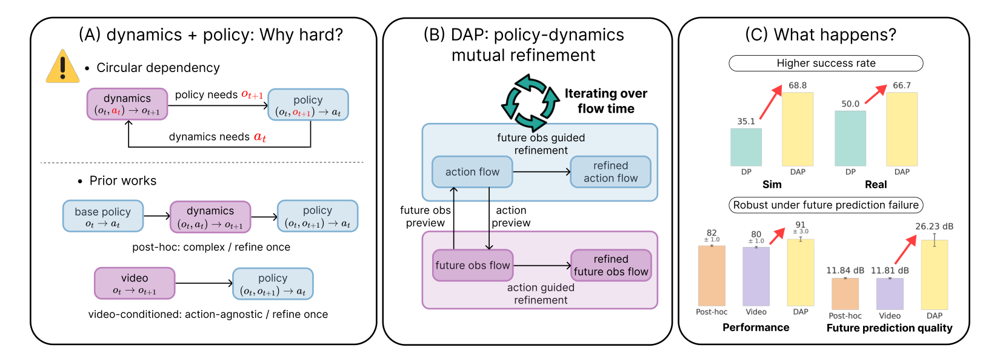
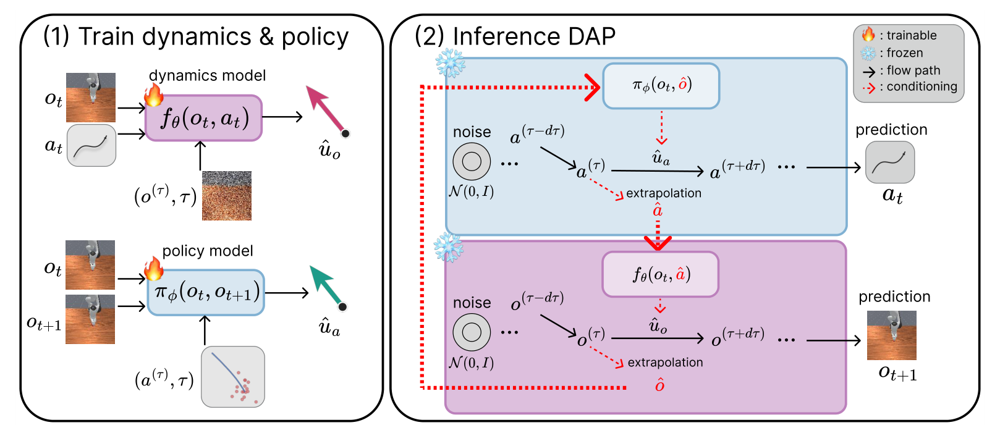
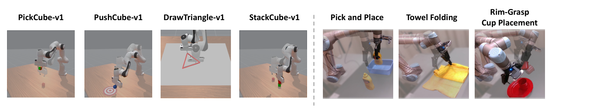
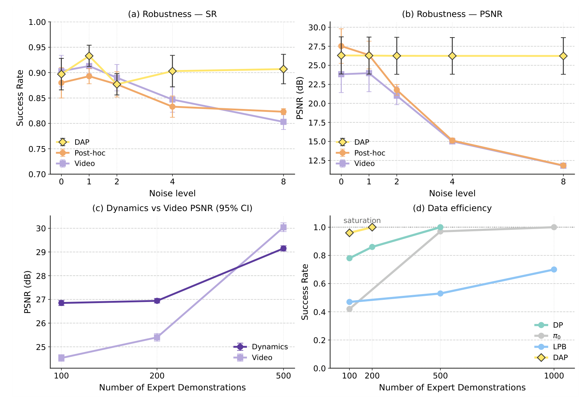
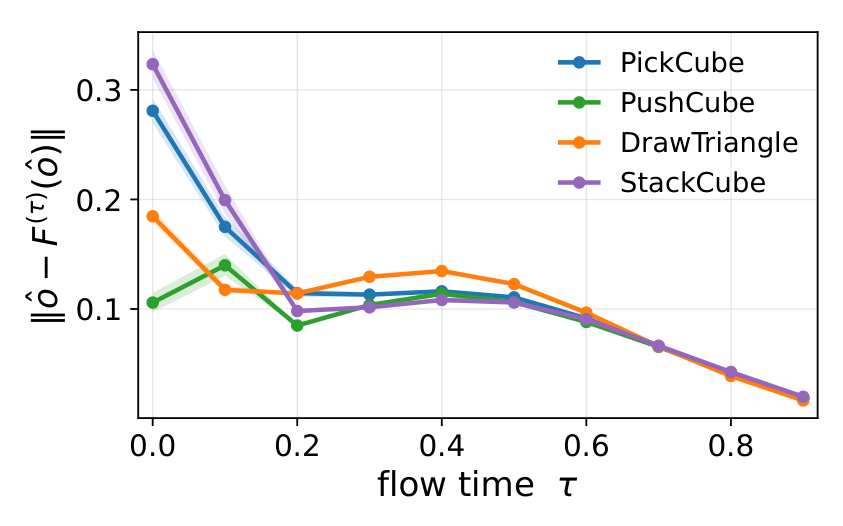

Generative BC policies model expert action distributions well, but they do not explicitly reason about what scene a candidate action would produce, so they cannot tell whether it reaches a task-relevant state. We address this by coupling action generation with an action-conditioned dynamics model that predicts the future observations induced by actions. However, naively placing such a dynamics model inside a generative policy creates a circular dependency. Future observations are needed to guide action generation, yet those observations can only be predicted from the action samples being generated.
We introduce Dynamics-Aligned Flow Matching Policy (DAP), where a flow matching policy and an action-conditioned flow matching dynamics model co-sample actions and future observations through flow extrapolation. At each step the two flows correct each other, and the samples converge to a self-consistent action and future pair on which the policy and dynamics model agree. Across four simulated tasks and three real-world tasks, DAP achieves the highest average success rate, with relative improvements of 56.5% in simulation and 33.3% in the real world over the strongest baseline in each setting. Moreover, when the future-observation estimate is corrupted at inference time, DAP recovers a self-consistent action–future pair through iterative refinement, whereas video-conditioned and post-hoc dynamics baselines, which use a fixed future surrogate, degrade or fail.

An action-conditioned dynamics model $(o_t, a_t) \rightarrow o_{t+1}$ tells us what a specific action would cause, unlike action-agnostic video prediction $p(o_{t+1} \mid o_t)$. Placing it inside a generative policy, however, creates a circular dependency: the dynamics model needs actions to predict the future, while the policy needs that future to choose actions. Prior works break the loop by using dynamics only post hoc, after a full action is sampled, or by predicting the future before any action exists. Both refine only once with a fixed future surrogate. DAP instead lets the two models refine each other at every flow step.

Training. DAP trains two conditional flow matching models separately on expert demonstrations: an action-conditioned dynamics model $f_\theta(o_t, a_t)$ that predicts future observations in SD-VAE latent space, and a future-conditioned policy $\pi_\phi(o_t, o_{t+1})$ that generates action chunks.
Inference. Both an action flow $a^{(\tau)}$ and a future-observation flow $o^{(\tau)}$ start from Gaussian noise and evolve in parallel. At each flow step, each sample is extrapolated to its endpoint estimate, $\hat{x} = x^{(\tau)} + (1-\tau)\,\hat{u}^{(\tau)}$, and that estimate conditions the other model:
$\hat{u}_a^{(\tau)} = \pi_\phi(a^{(\tau)}, \tau \mid o_t, \hat{o}), \qquad \hat{u}_o^{(\tau)} = f_\theta(o^{(\tau)}, \tau \mid o_t, \hat{a}).$
Intermediate action intentions update the predicted future, and the updated future refines the action flow. The samples converge to a self-consistent action–future pair on which the policy and dynamics model agree. Under a contraction-style assumption that holds empirically on all simulation tasks, the action–future mismatch shrinks at rate $O(1/K)$ in the number of flow steps $K$, whereas fixed conditioning keeps a non-vanishing residual.

We evaluate DAP on four ManiSkill3 tasks (100 demonstrations each, 100 trials) and three real-world tasks on a UR5 robot (10 trials each), against DP, LPB, UVA, and fine-tuned π0.
| Method | PickCube | PushCube | DrawTriangle | StackCube | Average |
|---|---|---|---|---|---|
| DP | 52.0 ± 12.3 | 82.3 ± 9.3 | 6.0 ± 5.6 | 0.0 ± 0.0 | 35.1 ± 2.7 |
| LPB | 46.0 ± 0.0 | 100.0 ± 0.0 | 18.7 ± 3.1 | 8.3 ± 1.2 | 43.3 ± 0.5 |
| UVA | 4.3 ± 0.6 | 75.3 ± 0.6 | 44.0 ± 0.0 | 0.7 ± 0.6 | 31.1 ± 0.1 |
| π0 | 34.0 ± 1.0 | 98.3 ± 0.6 | 2.0 ± 1.0 | 41.3 ± 3.1 | 43.9 ± 0.9 |
| DAP | 88.7 ± 0.6 | 98.3 ± 0.6 | 55.7 ± 2.3 | 32.3 ± 4.0 | 68.8 ± 1.6 |
| DAP (w/o Dyn.) | 73.7 ± 1.5 | – | 22.3 ± 1.2 | 15.0 ± 1.0 | – |
Success rates (%) on ManiSkill3, mean over the last three checkpoints ± standard deviation. DAP improves the average success rate from 43.9% (π0) to 68.8%, a 56.5% relative gain. Removing the dynamics model (w/o Dyn.) lowers success on every non-saturated task, so the gain comes from conditioning on the predicted future, not from the flow matching policy alone.
| Method | Pick and Place | Towel Folding | Rim-Grasp Cup Placement | Average |
|---|---|---|---|---|
| DP | 80 | 70 | 0 | 50.0 |
| UVA | 0 | 30 | 0 | 10.0 |
| π0 | 0 | 20 | 0 | 6.7 |
| DAP | 90 | 80 | 30 | 66.7 |
| DAP (w/o Dyn.) | 40 | 40 | 10 | 30.0 |
Success rates (%) over 10 trials per task, with 59–99 teleoperated demonstrations. DAP reaches 66.7% on average versus 50.0% for DP. On Rim-Grasp Cup Placement, where early contact choices are critical, DAP succeeds 3/10 times while all baselines fail.

(a, b) Corrupted future predictions. We inject Gaussian noise into the future-observation estimate at inference time. DAP keeps an 88–93% success rate and a final prediction PSNR of about 26 dB at every noise level, while post-hoc and video-conditioned baselines, which keep a fixed future surrogate, collapse in PSNR and lose success at high noise.
(c, d) Scaling with demonstrations. With 100–200 demonstrations, the action-conditioned dynamics model predicts the future more accurately than an action-agnostic video model, and DAP saturates task success by 200 demonstrations while baselines improve more gradually.

The alignment error $\|\hat{o} - F^{(\tau)}(\hat{o})\|$ measures how far the current future estimate is from the future the dynamics model predicts for the policy's action given that estimate. Within the first two flow steps it drops to a common level on all four tasks regardless of its initial value, and decreases to about 0.02 by the last step.
@inproceedings{lee2026dap,
title = {Learning Robust Visuomotor Policies via Dynamics Alignment},
author = {Lee, Dohyeok and Lee, Jung Min and Kim, Munkyung and Ju, Seokhun and Koo, Jin Woo and
Lee, Kyungjae and Kim, Dohyeong and Cho, Taehyun and Bhattacharjee, Tapomayukh and Lee, Jungwoo},
booktitle = {Conference on Robot Learning (CoRL)},
year = {2026}
}